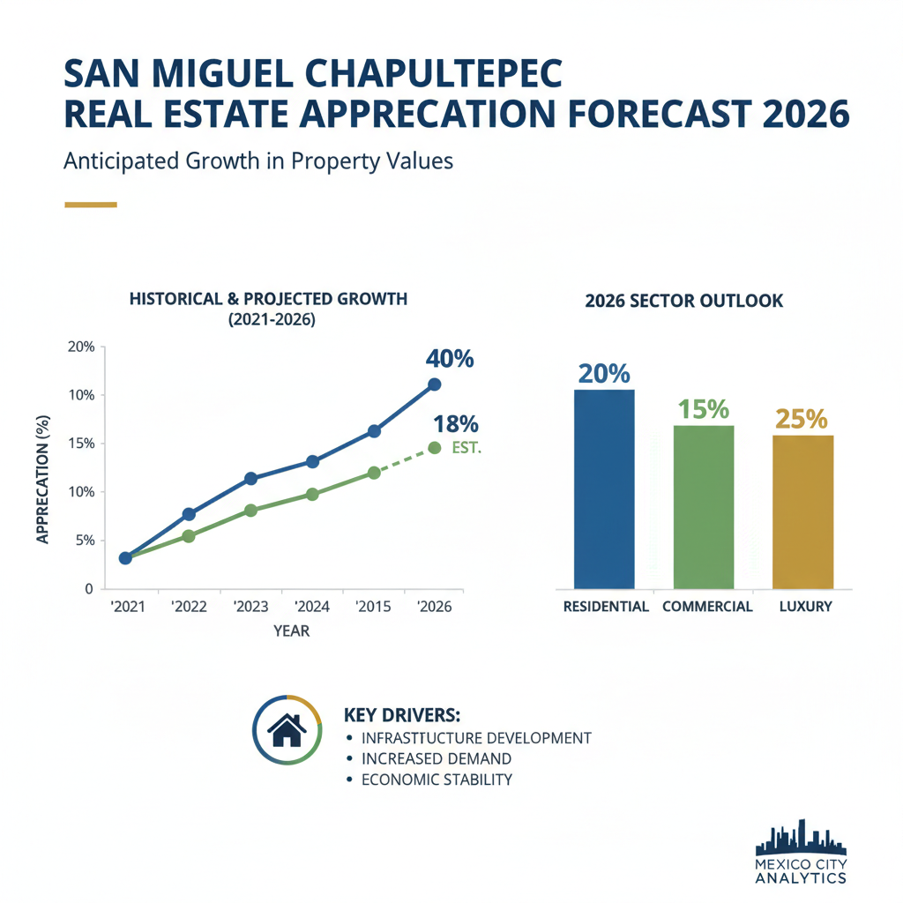

Architectural Guide 2026
San Miguel Chapultepec: Where Heritage Meets Hyper-Performance
Bordering the rarefied air of Polanco yet infused with the historic soul of Old Mexico City, San Miguel Chapultepec (SMC) offers an unparalleled arbitrage opportunity. We specialize in transforming these architecturally significant estates into 2026-ready assets, bridging US NCARB/AIA standards with rigorous local CDMX technicalities to deliver uncompromising luxury and generational wealth.
The Resident Architect's View
From my Condesa apartment, I often find myself drawn west, toward the elegant quiet of San Miguel Chapultepec. There’s a distinct quality to the afternoon light here, filtering through mature trees onto Art Deco facades, a testament to its early 20th-century development. While Roma can be a symphony of urban life, SMC’s interior streets offer a hushed counterpoint, punctuated only by the distant hum of Avenida Constituyentes. It possesses a structural integrity, both literal and metaphorical, that I find deeply compelling.

Erik Martínez, AIA
Principal Architect. Former SHoP Architects NYC. Bringing international precision to CDMX's most complex heritage assets.
Iconic Landmarks
- Property No. 176 on Fernando Montes de Oca
- La Sabatina Church at Fernando Montes de Oca No. 150
- Casa del Tiempo cultural center at General Pedro Antonio de los Santos No. 84
- San Miguel Arcángel Church at General José Morán No. 52
- Centro Cultural Ex Capilla de Guadalupe on Avenida Parque Lira
A Nexus of Old-World Charm and Future-Proof Investment
San Miguel Chapultepec is not merely a district; it is a meticulously preserved urban fabric woven from late Porfirian grandeur, sweeping Art Deco lines, and early functionalist structures. Developed largely in the early-to-mid 20th century, its planning avoided the hyper-density of adjacent zones, offering a distinct blend of walkability and insulation. In 2026, SMC presents a unique geographical and financial nexus, bordered by the kinetic Roma-Condesa corridor to the east and the ultra-luxury enclaves of Polanco and Lomas de Chapultepec to the west. This strategic positioning offers the historic charm of Roma, critically insulated from its severe seismic liabilities and unrelenting congestion.
Unlocking Valuation Premiums: The Turnkey 'Lifestyle' Property
The 2026 international buyer—the remote technology executive, the discerning expatriate—prioritizes 'ready to live' properties. These are not merely spaces; they are turnkey 'lifestyle' assets, acoustically optimized, digitally robust, and impeccably finished. SMC, alongside its western corridor counterparts Escandón and Tacubaya, is projected to deliver an extraordinary 35% to 50% cumulative five-year price growth, vastly outperforming the citywide average. An investment of 8% to 15% of acquisition value into a comprehensive gut-renovation—encompassing structural stabilization, acoustic engineering, and luxury finishing—positions investors to capture a lucrative equity spread, as foreign buyers willingly pay a 12% premium for fully modernized units.
Geotechnical Advantage: Firm Ground, Lower Risk
The foundational secret to San Miguel Chapultepec’s investment security lies beneath its historic streets. Unlike the geologically precarious Roma and Condesa districts, which sit squarely on the problematic Zone III (Lakebed) soils, SMC predominantly rests on Zone I (Firm Ground) and Zone II (Transition) classifications. These dense volcanic tuff, rock, and consolidated clay compositions offer profound structural resilience. Seismic waves pass through with minimal amplification, drastically lowering the risk of catastrophic asset loss during major seismic events.
This superior geomorphological position provides a significant structural arbitrage: properties in SMC do not require the exorbitant, deep friction piles essential for Zone III construction. We bridge the gap between US NCARB/AIA rigorous engineering standards and local construction realities, meticulously overseeing the project through a qualified Director Responsable de Obra (DRO). This mitigates the notorious 'Gringo Tax,' ensuring fair market luxury construction costs of $21,000 MXN to $31,781 MXN per square meter and guaranteeing an unassailable asset built to withstand Mexico City’s seismic realities.
Heritage Integration: Navigating INBAL's Meticulous Mandates
SMC’s early 20th-century development places the vast majority of its architecturally significant properties under the direct jurisdiction of INBAL (Instituto Nacional de Bellas Artes y Literatura), classifying them as Monumentos Artísticos. This means aesthetic conservation is not merely a suggestion, but a federal mandate. From the distinctive character of Fernando Montes de Oca to the cultural hub on General Pedro Antonio de los Santos, every renovation in this zone demands a profound respect for architectural patrimony.
Any remodeling, especially external modifications, must strictly adhere to INBAL guidelines. This includes a federally authorized color palette—predominantly historic earth tones, specific hues of beige, gray, black, navy blue, orange, and ochre. The replacement of original wrought iron fenestration or carved wooden frames with modern, incongruous materials like cheap aluminum or highly reflective glass is strictly prohibited. Before a single municipal permit can be issued, a formal Dictamen de Viabilidad from INBAL is mandatory. Our expertise ensures a seamless navigation of these Heritage Hurdles, preventing costly project embargoes (Clausuras) and transforming catalogued properties into highly coveted 'trophy assets'.
Water Autonomy: Engineering for Uninterrupted Luxury
While Mexico City’s Cutzamala System, the lifeblood of the metropolis, remarkably rebounded to 97.4% capacity by late 2025 after historic drought, localized 'water stress' remains a permanent reality. The city's strategic 50% reduction in Cutzamala reliance mandates proactive architectural intervention for luxury assets. To achieve absolute water autonomy and insulate against municipal rationing, a standard two-person household requires a subterranean cistern capacity of approximately 55,000 liters. For a family of four, this escalates to 110,000 liters. This substantial capital expenditure, particularly given seismic subsoil considerations, is an absolute requisite for securing the operational integrity and frictionless luxury living demanded by our clientele in SMC.
Architectural Feasibility: San Miguel Chapultepec 2026
| Project Type | Avg. Permit Time | Seismic Risk Level | Conservation Status |
|---|---|---|---|
| Comprehensive Gut Renovation (Catalogued Property) | 14 - 20 Months (post-acquisition) | Moderate (INBAL compliance, higher capital outlay) | Exceptional ROI (35-50% 5-year growth) |
| New Build (H/3/20/M Compliant Lot) | 18 - 24 Months (permits + construction) | Moderate (SEDUVI density caps, neighborhood oversight) | Strong ROI (maximizes expansive luxury units) |
| Interior Acoustic & Digital Infrastructure Upgrade | 6 - 10 Months (minimal external permits) | Low (internal focus, high tenant yield) | Immediate Premium Rental Yields (remote worker demographic) |
Invisible Modernization: Performance Engineering for the Elite
Our renovations in SMC embody 'Invisible Modernization.' We meticulously preserve the exterior’s historic Art Deco or Porfirian integrity while executing surgical interventions within. This includes installing double-glazed, acoustically sealed window units capable of disrupting high-decibel urban noise, integrating high-density fiberglass or acoustic rock wool within wall cavities for unparalleled sound isolation, and deploying whole-house Uninterruptible Power Supply (UPS) systems with voltage regulators to counter CFE grid volatility. These engineering interventions elevate a property from a standard dwelling to a premium asset, commanding top-tier yields from the discerning international market.
Curated Interiors: Mexican Modernism Meets Global Standards
Our interior philosophy for San Miguel Chapultepec balances the neighborhood’s heritage with the demands of global luxury. We source bespoke materials, from rich cantera stone to artisanal chukum plaster, to create spaces that are deeply rooted in CDMX's aesthetic tradition yet perform to the highest international standards. We leverage intelligent lighting design and sound-absorbing architectural geometry—specialized carpeting, acoustic curtains—to mitigate reverberation and create serene environments essential for remote work viability, ensuring every space is a sanctuary of comfort and connectivity.
The San Miguel Chapultepec Cheat Sheet
- Best Streets Fernando Montes de Oca, Gral. Pedro Antonio de los Santos, Joaquín A. Pérez
- Zoning Code H/3/20/M (Habitacional / 3 Levels / 20% Open Space / Medium Density)
- Est. Cost / m² $75,000 – $110,000 MXN / m² (Valuation Range, 2026)
- Best Coffee Café C. (casual elegance)
- Local Quirk The profound geological distinction from its eastern neighbors offers a unique, often overlooked, structural security.
The Challenge
The primary challenge in San Miguel Chapultepec lies in harmonizing stringent federal heritage conservation (INBAL) and local zoning (SEDUVI H/3/20/M) with the demands of luxury modernization and the inherent 'Gringo Tax' on construction labor.
The bureaucratic friction in the Miguel Hidalgo borough is substantial. Securing the necessary permits, from the Constancia de Alineamiento y Número Oficial to the definitive Manifestación de Construcción, can entail a non-theoretical, real-world timeline of 8 to 10 months. Furthermore, the Director Responsable de Obra (DRO) carries personal civil and criminal liability for structural integrity, demanding an uncompromising commitment to safety and compliance.
Our Solution
Our firm acts as your indispensable local representation, meticulously navigating the Procedimiento de Publicitación Vecinal and ensuring all architectural plans respect INBAL’s aesthetic guidelines and SEDUVI’s density caps. This proactive engagement mitigates administrative injunctions and ensures a seamless project flow.
We provide radical transparency to eliminate the 'Gringo Tax,' leveraging our established network of reputable local architectural firms and skilled tradesmen. We ensure all project financials are underwritten to fair market rates (e.g., $21,000 – $31,781 MXN per m² for luxury builds), and all transactions are legally unassailable through the mandatory involvement of an elite Notario Público who provides direct, fee-simple title in Mexico City.


Planning to Buy?
Don't sign a contract before a technical audit. We offer pre-purchase structural assessments in San Miguel Chapultepec.
2026 Cost Report
Get our detailed breakdown of current labor and material costs for luxury residential in CDMX.
Start Your San Miguel Chapultepec Legacy
NYC Precision. Mexican Craft. We eliminate uncertainty for international investors.